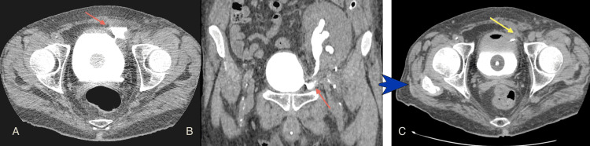
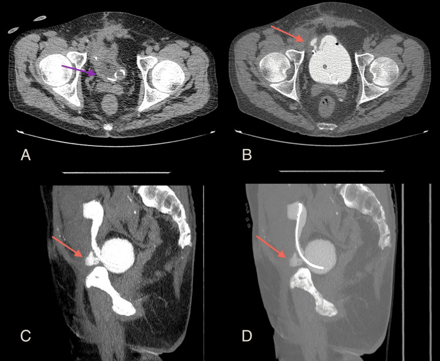
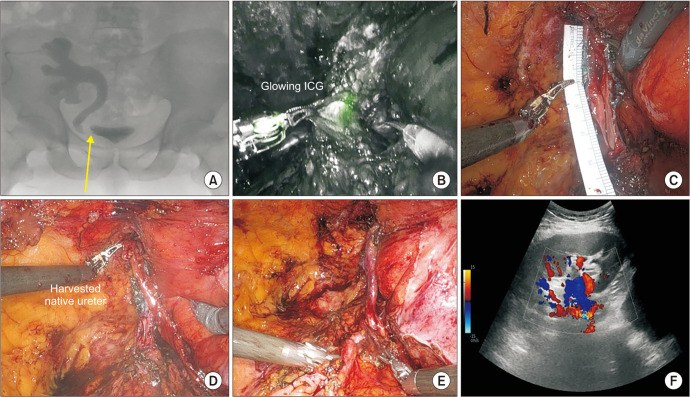
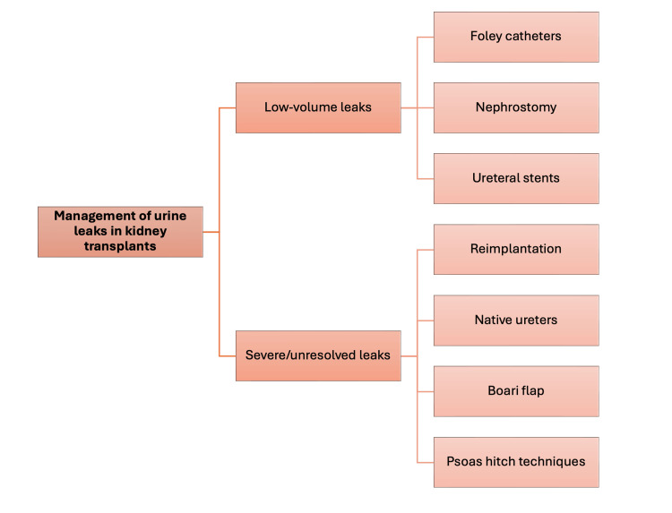

3011 — Biến chứng niệu quản sau ghép thận: hẹp miệng nối & rò nước tiểu
Tags: pattern:hep-miet-noi pattern:ro-nuoc-tieu pattern:urinoma pattern:gian-dai-he-nieu pattern:hep-do-thieu-mau vung:than-ghep vung:he-nieu vung:tieu-khung protocol:CT-urography protocol:MAG3 score:Clavien-Dindo
Mức chắc chắn (certainty): tổng hợp y văn (literature synthesis) — ghép loạt 4 ca rò nước tiểu được chẩn đoán bằng CT niệu đồ ngược dòng (Cureus 2026, PMC12989737), loạt 29 ca hẹp niệu quản mảnh ghép được tái tạo bằng robot (Eur Urol Open Sci 2025, PMC12169748), 15 ca tái tạo niệu quản robot (Investig Clin Urol 2025, PMC11729223), tổng quan biến chứng phẫu thuật sau ghép thận ở trẻ (J Clin Med 2026, PMC12842314) và ca rò niệu – ruột ở ghép thận en-bloc nhi (Front Pediatr 2021, PMC8310905). Không có ca do nhóm tự chụp.
Câu hỏi thực hành: nam 48 tuổi, ghép thận 1 tháng, đau âm ỉ vùng hố chậu ghép, siêu âm thấy ứ nước nhẹ + một lớp dịch dưới thận ghép, creatinin tăng ít. Câu hỏi: ứ nước này là tắc thật hay giãn sinh lý, dịch kia là urinoma hay lymphocele, và chụp gì để trả lời trong một lần? Bài chốt ba quyết định: (1) rò hay hẹp — phân biệt bằng THỜI ĐIỂM + vị trí trên niệu đồ; (2) chụp gì khi siêu âm không kết luận — CT niệu đồ ngược dòng; (3) bậc thang điều trị — dẫn lưu/stent trước, tạo hình khi hẹp dài > 1–3 cm hoặc thất bại nội soi. Nối 190 – Sỏi đường niệu trên & sỏi thận ghép, 189 – Đánh giá tiết niệu trước ghép thận, 672 – Biến chứng muộn sau tái tạo bàng quang.
1. Tổng quan bệnh học – cơ chế hình ảnh: vì sao đoạn niệu quản SÁT BÀNG QUANG luôn là điểm yếu
- Giải phẫu quyết định tất cả: niệu quản mảnh ghép không còn nguồn máu từ bể thận–niệu quản gốc; toàn bộ nuôi dưỡng đi ngược dòng từ các nhánh động mạch thận. Đoạn xa nhất (sát miệng nối bàng quang) là nơi áp lực tưới thấp nhất → thiếu máu → hoại tử đầu xa hoặc xơ hóa về sau. Vì vậy gần như mọi biến chứng niệu quản đều xảy ra tại hai miệng nối.
- Hai hậu quả của cùng một cơ chế thiếu máu:
- Sớm (tuần đầu – tháng đầu): thiếu máu/hoại tử hoặc hở miệng nối → rò nước tiểu → urinoma, rò ra vết mổ, hoặc rò vào ổ bụng.
- Muộn (nhiều tháng): mô thiếu máu lành bằng xơ → hẹp miệng nối (thường tại ureterovesical junction, UVJ).
- TẠI SAO nước tiểu rò nhiều mà creatinin máu có thể chỉ tăng nhẹ: nước tiểu rò vào khoang ngoài phúc mạc/hố chậu được hấp thu lại vào tuần hoàn qua phúc mạc và mô lỏng lẻo — giống một "lọc hồi lưu" tự nhiên. Vì vậy creatinin máu không phản ánh đủ mức rò; dấu hiệu chốt là dịch tụ có creatinin cao gấp nhiều lần huyết thanh và lượng nước tiểu qua dẫn lưu/vết mổ tăng.
- TẠI SAO siêu âm đầu tay vẫn không đủ: sau ghép, đài bể thận giãn do mất trương lực khá thường gặp → ứ nước không đồng nghĩa tắc; ngược lại, rò nhỏ có thể không làm giãn hệ niệu. Hai ca trong loạt Cureus 2026 đến với siêu âm không kết luận, và chính CT niệu đồ ngược dòng mới định vị được chỗ rò.
- Ngưỡng định lượng phải thuộc:
| Biến chứng | Tần suất được báo | Nguồn |
|---|---|---|
| Hẹp niệu quản mảnh ghép | 0,6–10,5%; loạt khác 2–13%; "tới 10%" | PMC12169748; PMC11729223 |
| Rò nước tiểu | 0–9,3%; loạt khác 1,2–8,9% | PMC12169748; PMC12989737 |
| Trào ngược bàng quang–niệu quản (VUR) | 1–86% (khác nhau theo cách đo); loạt khác 2–79% | PMC12169748; PMC11729223 |
| Biến chứng niệu ở trẻ ghép thận | 1,3–30%; biến chứng phẫu thuật chung tới 15,4% | PMC12842314 |
- TẠI SAO con số dao động lớn (0,6–10,5%): khác nhau ở định nghĩa hẹp (chỉ hẹp có can thiệp hay mọi hẹp trên hình ảnh), thời gian theo dõi, và kỹ thuật miệng nối (Lich–Gregoir, Politano–Leadbetter, nối với niệu quản gốc). Vì vậy không trích một con số duy nhất khi tư vấn.
2. Mẫu hình + chẩn đoán phân biệt theo thời điểm và vị trí (gamut)
- Gamut theo thời điểm (hỏi "bao lâu sau ghép" trước khi đọc ảnh):
| Thời điểm | Thực thể hay gặp | Vì sao |
|---|---|---|
| < 1 tháng | Rò miệng nối, hoại tử đầu xa niệu quản, urinoma, huyết khối/tắc stent, nhiễm trùng vết mổ | Miệng nối chưa lành + thiếu máu đầu xa |
| 1–6 tháng | Hẹp miệng nối do thiếu máu–xơ, chèn ép bởi lymphocele, xoắn mảnh ghép, hẹp do stent | Lymphocele thường xuất hiện ~6 tuần sau ghép; xơ hóa tiến triển |
| > 6 tháng | Hẹp xơ muộn, hẹp do BK polyomavirus, sỏi, VUR, hẹp tái phát sau can thiệp | Tổn thương mạn của niệu quản/đường tiết niệu |
- Gamut theo vị trí (quyết định kiểu mổ):
- Miệng nối UVJ (hay nhất): hẹp/rò ngay trên bàng quang → nội soi/nong hoặc cấy lại niệu quản (ureteroneocystostomy); đủ dài thì Boari flap, psoas hitch.
- Niệu quản giữa: thường do thiếu máu đoạn dài hoặc chèn ép; nếu còn đủ dài → nối niệu quản–niệu quản với niệu quản gốc (native ureter).
- Miệng nối bể thận–niệu quản (khi nối với niệu quản gốc): rò sớm (ca 59 tuổi trong loạt Cureus) — dễ nhầm với rò dịch bạch huyết vì dịch tụ quanh rốn thận.
- Trong bàng quang: hẹp lỗ niệu quản cấy vào bàng quang, VUR, sỏi quanh stent.
3. Bảng so sánh phân biệt (ma trận đối chiếu)
| Thực thể (entity) | Hình ảnh điển hình | Chốt vào (rule-in) | Chốt loại (rule-out) | Gợi ý xác nhận |
|---|---|---|---|---|
| Rò miệng nối UVJ (sớm) | Dịch tụ dưới–bên thận ghép, sát bàng quang; CT niệu đồ ngược dòng: thuốc cản quang ra ngoài lòng niệu quản ngay tại miệng nối | Cản quang ngoài lòng tại miệng nối + dịch tụ creatinin cao | Không có cản quang ngoài lòng khi bàng quang đã đầy đủ → loại rò | CT niệu đồ ngược dòng (bơm qua Foley) ± chọc hút dịch đo creatinin |
| Rò miệng nối bể thận–niệu quản gốc | Dịch tụ quanh rốn thận, không sát bàng quang; thường 2 tuần sau ghép | Rò ở cực trên + creatinin dịch cao | Dịch tụ đơn thuần quanh thận, không thấy đường rò → nghĩ lymphocele/máu tụ | CT niệu đồ ngược dòng + thì muộn; có thể cần chụp qua dẫn lưu |
| Hẹp miệng nối do thiếu máu (muộn) | Giãn đài bể thận + chỗ hẹp ngắn tại UVJ, niệu quản trên hẹp nhẵn, không có khối | Hẹp ngắn tại miệng nối + giãn trên chỗ hẹp + không có nguyên nhân ngoài | Không giãn sau khi bàng quang rỗng, không có chênh áp → giãn không tắc | CT niệu đồ/MR niệu đồ; MAG3 bài tiết; đo chênh áp khi chọc dò |
| Hẹp do lymphocele chèn ép | Khối dịch không ngấm đè đẩy niệu quản, hẹp dài, mềm, di lệch trục | Khối dịch chèn + hẹp đúng đoạn bị đè | Khối dịch không liên quan trục niệu quản → loại | Siêu âm + CT; điều trị khối dịch trước (dẫn lưu/xơ hóa) rồi đánh giá lại |
| Urinoma kín (không thấy đường rò) | Khối dịch tròn, sát miệng nối, vỏ mỏng; không cản quang trong lúc bơm ngược dòng (rò đã bít tạm) | Dịch creatinin ≫ huyết thanh + vị trí sát miệng nối | Dịch creatinin ≈ huyết thanh → lymphocele/huyết thanh | Chọc hút + xét nghiệm creatinin dịch; CT có dẫn lưu |
| Hẹp do BK polyomavirus | Hẹp lan tỏa/đoạn dài, thành niệu quản dày, kèm hẹp bể thận | BK trong máu/nước tiểu dương + hẹp lan tỏa | Hẹp ngắn khu trú tại miệng nối → nghĩ thiếu máu | BK viral load; tránh nong đơn thuần khi virus đang hoạt động |
| Sỏi / stent vôi hóa | Cản quang trong lòng niệu quản, bóng sáng trên KUB, vôi hóa quanh stent lưu lâu | Hình cản quang trong lòng + bóng sáng trên X-quang | Cản quang lòng niệu quản đều, không có bóng rời → loại | CT liều thấp; soi niệu quản (190) |
| Giãn không tắc (biến thể) | Giãn toàn bộ đài bể thận, không có chỗ hẹp, niệu quản xuống bàng quang rộng đều | Giãn giảm sau khi bàng quang rỗng/đi tiểu + không có chỗ chuyển tiếp | Có chỗ hẹp khu trú + chênh áp → tắc thật | MAG3 có lợi tiểu; theo dõi, không đặt stent theo siêu âm đơn thuần |

Cureus 2026 (PMC12989737), CC BY 4.0: nam 48 tuổi, 1 tháng sau ghép, đau âm ỉ hố chậu, urinoma do rò miệng nối niệu quản–bàng quang. (A) lát ngang và (B) tái tạo vành — thuốc cản quang nằm NGOÀI hệ niệu ngay chỗ niệu quản vào bàng quang (mũi tên đỏ); (C) sau điều trị bảo tồn + đặt stent niệu quản, chụp lại không còn rò (mũi tên vàng). Đây là mẫu hình "rò = cản quang ra ngoài", khác hoàn toàn "hẹp = cản quang dừng lại".4. Protocol chụp + ngưỡng xử trí
- Bước 1 — siêu âm Doppler mảnh ghép (đầu tay, 24/7): đo kích thước đài bể thận (mm), chỉ số trở kháng (RI), tìm dịch tụ quanh thận, đánh giá tưới máu. Siêu âm không kết luận → bước 2.
- Bước 2 — CT niệu đồ NGƯỢC DÒNG (retrograde MDCT urography) — kỹ thuật theo loạt Cureus 2026:
- Dung dịch cản quang iod pha loãng 5–7% (pha với nước muối), bơm qua Foley.
- ~240 mL, chia 4 lần × 60 mL, bơm đầy bàng quang + niệu quản ghép; ngưỡng đủ để đánh giá ~250 mL (dưới ngưỡng này dễ âm giả).
- Cắt 1,25 mm, từ mào chậu tới mấu chuyển nhỏ, tái tạo ngang – vành – dọc; bệnh nhân nằm ngửa hoặc sấp; không cần chụp sau tháo bàng quang.
- Giá trị: định vị chính xác chỗ rò/hẹp và phân biệt rò với hẹp trong cùng một lần chụp — đúng nhóm bệnh nhân siêu âm không kết luận.
- Bước 3 — khi cần chức năng: MAG3 có lợi tiểu (đánh giá bài tiết và tháo nước), MR niệu đồ nếu cần tránh bức xạ (trẻ, thai), chọc dò ổ dịch đo creatinin dịch (chốt urinoma).
- Bậc thang điều trị rò (theo sơ đồ bài gốc và loạt ca):
| Mức | Cách xử trí | Số liệu/điều kiện |
|---|---|---|
| Rò thể tích nhỏ | Foley dẫn lưu ± dẫn lưu thận qua da ± stent niệu quản | Ca 48 tuổi khỏi bằng bảo tồn + stent; ca 46 tuổi cần dẫn lưu urinoma qua CT trước |
| Rò nặng/không giải quyết | Cấy lại niệu quản (reimplantation), nối với niệu quản gốc, Boari flap, psoas hitch | Ca 46 tuổi: Politano–Leadbetter, còn rò tháng 1–2 rồi hết tháng 3; ca 49 tuổi: rò đôi sau Boari flap |
- Ngưỡng chọn can thiệp HẸP (theo EAU, trích trong PMC12169748):
- < 1 cm: nong bóng/cắt nội soi là lựa chọn đầu, tỉ lệ thành công cao nhất.
- 1–3 cm: vẫn có thể nội soi nhưng **thành công < 50%** khi > 1 cm → cân nhắc sớm tạo hình.
- > 3 cm, tái phát sau nội soi, giải phẫu phức tạp: tạo hình niệu quản (không nong lặp lại vô hạn).
- Thành công nội soi ban đầu ~60% (tổng quan hệ thống); một loạt báo 24% nội soi so với 81% mổ mở; biến chứng nội soi 9% (nặng 2%).
- Kết quả tạo hình (để tư vấn): 29 ca tái tạo bằng robot, theo dõi trung vị 18 tháng (IQR 13–34): 97% không còn dẫn lưu thận/JJ; biến chứng 21% Clavien–Dindo ≤ 2 và 10% ≥ 3; 1 ca (3%) nhiễm khuẩn huyết do stent lệch ngày 7. Loạt 15 ca khác: 6/6 ca hẹp miệng nối hết hẹp, nằm viện 5,9 ± 4,5 ngày, rút sonde niệu đạo 15,1 ± 5,4 ngày, rút stent niệu quản 4,9 ± 1,5 tuần.
flowchart TD
A[Ghép thận + creatinin tăng, đau hố chậu, dịch tụ] --> B[Siêu âm Doppler: giãn đài bể thận, RI, dịch tụ]
B --> C{Siêu âm kết luận được?}
C -->|Không| D[CT niệu đồ ngược dòng: 5-7% cản quang, 240 mL qua Foley, cắt 1,25 mm]
C -->|Có giãn rõ + chỗ hẹp| E[MAG3 có lợi tiểu + CT/MR niệu đồ]
D --> F{Cản quang ra ngoài lòng?}
F -->|Có| G[RÒ nước tiểu: đo creatinin dịch, dẫn lưu]
F -->|Không, có chỗ hẹp| H[HẸP miệng nối: đo chiều dài hẹp]
G --> I{Thể tích nhỏ?}
I -->|Có| J[Foley + stent niệu quản, theo dõi 1-2 tuần]
I -->|Không hoặc thất bại| K[Tạo hình: cấy lại niệu quản, Boari flap, psoas hitch, nối niệu quản gốc]
H --> L{Chiều dài hẹp?}
L -->|< 1 cm| M[Nong bóng/cắt nội soi: thành công cao nhất]
L -->|1-3 cm| N[Cân nhắc nội soi hoặc tạo hình sớm]
L -->|> 3 cm hoặc tái phát| K
J --> O[Chụp lại trước khi rút stent]
M --> O
N --> O
K --> O
5. Biến thể bình thường và cạm bẫy
- Bẫy số 1 — "ứ nước = tắc, đặt stent": giãn đài bể thận không tắc sau ghép khá phổ biến (mất trương lực, bàng quang đầy). Chốt bằng giãn giảm sau đi tiểu/bàng quang rỗng, không có chỗ chuyển tiếp, và MAG3 có lợi tiểu — không can thiệp chỉ vì siêu âm.
- Bẫy số 2 — lymphocele đóng vai "hẹp": khối dịch chèn ép niệu quản tạo hẹp dài, mềm, di lệch trục; nong niệu quản lúc này thất bại. Điều trị khối dịch trước (dẫn lưu/xơ hóa), rồi đánh giá lại.
- Bẫy số 3 — urinoma vs lymphocele vs máu tụ vs áp-xe: siêu âm đều là "khối dịch". Chốt bằng creatinin dịch ≫ huyết thanh (urinoma), HU (máu tụ tươi ~85 HU trong một ca báo cáo), và khí/bờ dày (áp-xe).
- Bẫy số 4 — âm giả vì bàng quang chưa đầy: bơm dưới ~250 mL dễ bỏ sót rò nhỏ; phải bơm đủ 240 mL chia 4 lần rồi chụp, và bơm thêm nếu bệnh nhân dung nạp.
- Bẫy số 5 — thận gốc còn bài tiết: bệnh nhân không cắt thận gốc vẫn có nước tiểu riêng; đừng quy mọi dịch tụ cho mảnh ghép mà bỏ qua đường niệu thận gốc.
- Bẫy số 6 — bóng Foley che miệng nối: bóng Foley bơm căng tại cổ bàng quang có thể che/chèn miệng nối, tạo hình giả hẹp hoặc giả rò; rút/hạ bóng rồi chụp lại.
- Bẫy số 7 — "satisfaction of search": thấy hẹp là dừng; phải đọc tiếp sỏi, stent gãy/vôi hóa, khối dịch chèn, VUR — và ngược lại thấy rò vẫn phải tìm hẹp phía dưới vì hai thứ thường đi cùng.
- Cạm bẫy mặt cắt: trên lát ngang, thuốc cản quang đậm đặc trong bể thận có thể giả "sỏi cản quang"; luôn đối chiếu cửa sổ xương + tái tạo vành/dọc và thì trước cản quang.
6. Tự lượng giá — Blind Quiz
Ca 1 — 1 tháng sau ghép, đau hố chậu, siêu âm không kết luận.
- Gợi ý lâm sàng: nam 48 tuổi, ghép thận 1 tháng, đau âm ỉ; siêu âm thấy dịch quanh mảnh ghép nhưng không rõ nguyên nhân.
- Câu hỏi: (A) và (B) cho thấy gì? Vì sao phải bơm đủ ~240 mL? Điều trị nào đã giúp ca này khỏi?
Bấm để hiện đáp án (findings + chẩn đoán)
- Dấu hiệu (findings): (A) lát ngang và (B) tái tạo vành — thuốc cản quang ra ngoài lòng hệ niệu ngay chỗ niệu quản vào bàng quang (mũi tên đỏ), tạo ổ dịch cạnh bàng quang; (C) sau bảo tồn + stent niệu quản, chụp lại không còn cản quang ngoài lòng (mũi tên vàng).
- Chẩn đoán (diagnosis): rò nước tiểu tại miệng nối niệu quản–bàng quang (urinoma).
- Vì sao bơm đủ: dưới ~250 mL, áp lực trong hệ niệu không đủ để cản quang vào chỗ rò nhỏ → âm giả; bài gốc dùng 240 mL chia 4 lần × 60 mL.
- Nguồn ảnh: Cureus 2026 (PMC12989737), CC BY 4.0.
Ca 2 — Sau cấy lại niệu quản, vẫn còn rò: đọc theo tháng.

- Gợi ý lâm sàng: nam 46 tuổi, rò dai dẳng từ miệng nối, đã dẫn lưu urinoma qua CT và cấy lại niệu quản kiểu Politano–Leadbetter; tháng thứ 2 sau mổ vẫn rò.
- Câu hỏi: Vì sao (A) không thấy rò còn (B) thấy rõ? Rò sau tạo hình như vậy xử trí thế nào?
Bấm để hiện đáp án
- Dấu hiệu (findings): (A) bàng quang rỗng, chỉ thấy bóng Foley và đầu xa stent (mũi tên tím) → không có cản quang để lộ đường rò; (B) sau bơm ngược dòng — cản quang tụ ngoài bàng quang tại miệng nối (mũi tên đỏ); (C, D) tái tạo dọc và MIP cho thấy đường rò và stent.
- Chẩn đoán (diagnosis): rò miệng nối còn tồn tại sau cấy lại niệu quản — trong loạt ca, rò giảm dần qua tháng 1–3 với điều trị bảo tồn.
- Vì sao: vách rò cần thời gian xơ bít; chụp khi bàng quang rỗng là âm giả kinh điển.
- Nguồn ảnh: Cureus 2026 (PMC12989737), CC BY 4.0.
Ca 3 — Hẹp miệng nối: nhìn bằng niệu đồ bàng quang và chọn bậc điều trị.

- Gợi ý lâm sàng: bệnh nhân ghép thận, hẹp niệu quản tái phát sau các can thiệp nội soi thất bại.
- Câu hỏi: (A) cho thấy tổn thương gì, ở đâu? Với hẹp > 3 cm hoặc tái phát, chọn nong tiếp hay tạo hình?
Bấm để hiện đáp án
- Dấu hiệu (findings): (A) niệu đồ bàng quang ngược dòng — chỗ hẹp đoạn ngắn tại vùng miệng nối của thận ghép (mũi tên vàng), đài bể thận giãn phía trên. Các panel B–F là thì mổ: (B) tiêm xanh indocyanine qua dẫn lưu thận để đánh giá tưới máu niệu quản, (C) đo chiều dài đoạn niệu quản cần thay, (D) lấy niệu quản gốc, (E) miệng nối sau tạo hình.
- Chẩn đoán (diagnosis): hẹp miệng nối niệu quản mảnh ghép — điều trị bằng tái tạo niệu quản (cấy lại/nối với niệu quản gốc).
- Vì sao không nong tiếp: hẹp tái phát sau nội soi và đoạn tổn thương dài → theo EAU tạo hình ngay; trong loạt 29 ca, 97% không còn stent/dẫn lưu thận ở 18 tháng.
- Nguồn ảnh: Investig Clin Urol 2025 (PMC11729223), CC BY-NC 4.0.
Ca 4 — Sơ đồ quyết định (tự kiểm tra trước khi đọc đáp án).

- Câu hỏi: Với rò thể tích nhỏ, ba lựa chọn đầu tiên là gì? Với rò nặng/không giải quyết, bốn kiểu tạo hình nào?
Bấm để hiện đáp án
- Rò nhỏ: Foley dẫn lưu, dẫn lưu thận qua da (nephrostomy), stent niệu quản.
- Rò nặng/không giải quyết: cấy lại niệu quản (reimplantation), nối với niệu quản gốc (native ureters), Boari flap, psoas hitch.
- Nguồn ảnh: Cureus 2026 (PMC12989737), CC BY 4.0 — sơ đồ do tác giả bài gốc tạo.
Bài liên quan chéo
- 100 – Tổng quan hệ Bụng
- 190 – Sỏi đường niệu trên & sỏi thận ghép ở bàng quang thần kinh
- 189 – Đánh giá tiết niệu trước ghép thận ở bàng quang thần kinh/tái tạo
- 672 – Biến chứng muộn sau tái tạo bàng quang
- 191 – Vá lại rò niệu–sinh dục thất bại: chọn lại đường mổ
- 1660 – Stent niệu quản lưu quên & kết vôi
- 133 – Hẹp miệng nối & cholangiopathy thiếu máu sau ghép gan (cùng nguyên lý "miệng nối thiếu máu")
Ảnh
- 5 ảnh: 4 ảnh CC BY 4.0 (Cureus 2026, PMC12989737) + 1 ảnh CC BY-NC 4.0 (Investig Clin Urol 2025, PMC11729223) — nguyên bản, không crop/ghép; chi tiết trong
images/CREDITS.md. - Không dùng ảnh của Eur Urol Open Sci 2025 (PMC12169748, CC BY-NC-ND) và Front Pediatr 2021 (PMC8310905, CC BY nhưng khác bệnh cảnh nhi en-bloc) — chỉ dẫn link trong
sources.md.
Không dùng để chẩn đoán độc lập khi chưa có người hướng dẫn.